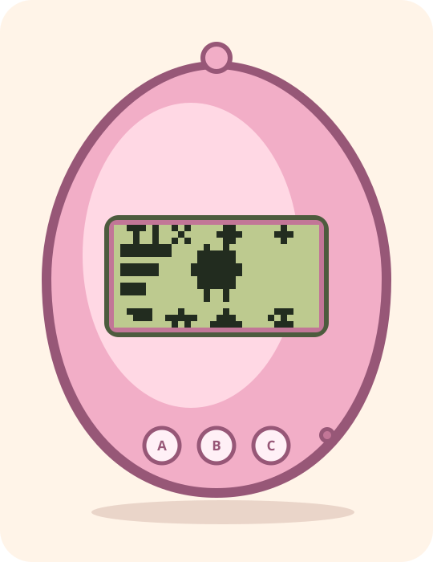
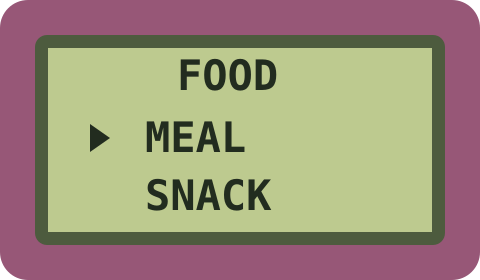
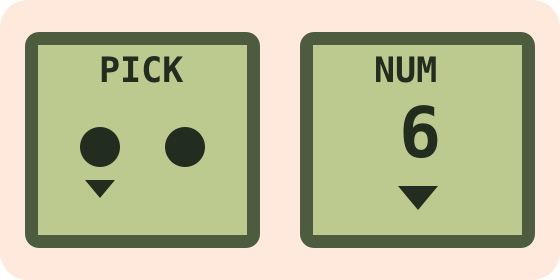

Meet the device
The 32 × 16 monochrome LCD contains four care icons above the creature and four below it. Black pixels are on; olive-green pixels are off. The creature and its needs fit into that tiny space.
COMPLETE PLAYER GUIDE
Everything you need to raise a CNA Tamagotchi: the three buttons, every care icon, calls for attention, the five-round Character game, evolution, saving, and a new egg.
Begin Part 01
READ THIS FIRST
You do not select an adult creature from a list. You begin with an egg, build a care history, and discover the result as it grows. Food, games, sleep, discipline, messes, illness, and missed calls all matter.
The game continues to account for time after you close it. A short visit is enough when your pet is well, but ignoring it for too long has consequences.
COURSE MAP
This quick map shows the whole journey. The full beginner course immediately below explains each part step by step: what to press, what to look for, and when to move on.
The 32 × 16 monochrome LCD contains four care icons above the creature and four below it. Black pixels are on; olive-green pixels are off. The creature and its needs fit into that tiny space.
A moves forward. B opens, confirms, or performs an action. C backs out of a screen. On a computer use A/→, B/Enter/Space, and C/Backspace/Escape. You can also click or tap the three round buttons below the LCD.
On the home screen, one LCD icon is inverted against a dark background. That is the current selection. Press A until the icon you want is selected, then press B. The icons are not separate modern buttons; the three-button rhythm is the intended way to play.
A new generation begins as an egg. It hatches after roughly five minutes. There is nothing to feed before the hatch, so use this time to become comfortable with the selection ring and the Status icon.
Food is the first icon in the top row. Press B to open it. The international P1 LCD shows BREAD and CANDY; press A to move the pointer, B to serve the highlighted option, or C to leave without serving anything.
Bread restores one hunger segment and adds a small amount of weight. It is the normal answer to an empty hunger meter or a genuine hunger call. Feeding at sensible intervals is better than waiting for a crisis.
Candy restores one happiness segment, but adds more weight than Bread. It is useful when happiness is low, but a completed Character game is normally the better way to lift happiness.
The three groups down the left side of the home LCD are hunger, happiness, and discipline. Each group contains four two-pixel segments. More black segments mean a fuller meter. Empty hunger or happiness eventually demands attention.
Select Status and press B. Repeated presses of B cycle through age/weight, discipline, hunger, and happiness. Press C to return home. Status is your calm check-in screen, not an emergency screen.
Every egg follows the same P1 family: Babytchi, Marutchi, Tamatchi or Kuchitamatchi, then a care-determined adult. You never choose a species or a second programme.
Select Game while your pet is awake. Character is P1’s only mini-game. Press A to choose whether your pet will look left or right, then press B to reveal that round.
Character has five rounds. After each result, press B to continue. Three or more correct predictions win the whole game, improving happiness and helping control weight.
A sleeping pet will not play. If you try an unavailable action, the home LCD briefly shows a small cross instead of changing the pet. This is a reminder to solve the current need first, not an error that damages the pet.
From the child stage onward, the pet follows a day/night schedule. A sleeping pet is marked with a small sleep symbol. It rests at night and wakes in the morning. Its light is a care responsibility, not a decorative setting.
When the pet falls asleep, select Light and press B to turn the light off. Waking turns it back on automatically. Leaving the light on creates a genuine attention call. Pressing Light while the pet is awake has no effect.
Waste appears as a small mark near the lower-right part of the home LCD. The Clean icon removes it. Do not wait for several messes: uncleaned waste contributes to poor health and can make the pet sick.
A small cross on the LCD means illness. Select Medicine and press B. Medicine is for illness only; it will not restore hunger, happiness, or discipline. If there is no illness, the device gives the unavailable-action cross instead.
The lower-right Attention icon becomes inverted. Calls can be caused by empty hunger, empty happiness, a sleeping pet with its light on, or a deliberate false call. Genuine calls should be handled within about fifteen minutes.
Sometimes a pet calls even though food, happiness, sleep, and cleanliness are fine. This is the correct time for Discipline. It raises discipline only for that false-call situation. Using it at other times does nothing, so do not use it as a generic punishment button.
Ignoring a genuine call creates a care mistake. Care mistakes remain part of the pet's history and influence evolution. The Status screen shows their count. There is no single perfect adult button: consistent sensible care produces better outcomes.
Bread adds a little weight, Candy adds more, and a completed winning Character game reduces it when appropriate. Severe neglect, illness, and uncleaned waste shorten a pet’s life.
The egg hatches at about 5 minutes, then develops through Babytchi, Marutchi, a teenager, and a care-determined adult. The exact P1 schedule and evolution conditions are being verified against the selected 1997 programme.
The game saves a new slot once, then saves after real care changes. It does not rewrite an unchanged save simply because you opened and closed the window. On the next launch, elapsed time is applied safely, including incomplete minutes.
International P1 ends on an angel-and-stars screen. Press A and C together to begin a clean new egg. The old pet’s needs and care history do not continue into the new life.


THE FULL BEGINNER COURSE
Start at Part 01 for a new pet. Do not rush: a real-time pet is meant to be checked, cared for, and left alone between short visits.
Ignore the tiny reset pinhole for now. Your normal play always uses only the three large round buttons.
Check: you can move the selection and return to the home screen.
The LCD is deliberately only 32 pixels wide and 16 pixels high. There are no grey pixels: a black pixel is on and the olive background is off.
Check: you can tell the icon bands from the central creature area.
The icon order never changes. Learn it now so later care calls feel immediate rather than confusing.
Check: return the selection to Food, the first top-left icon.
A brand-new game begins with an egg. It hatches after about five real minutes; food and games are not useful before that.
Check: the egg has become a small creature and the Food icon now matters.
Food is a two-item menu, not an instant action. This is the first place to practise the A/B/C rhythm.
Check: you can open and leave the menu without feeding by accident.
Bread is normal nutrition. It restores one hunger segment and adds only a small amount of weight.
Check: serve Bread when the hunger meter is low, not merely because the menu is available.
Candy restores happiness, but it adds more weight than Bread. It is useful care, not a free reward button.
Check: you understand that a game is normally the better way to lift happiness.
Three four-segment meters run down the left side of the central home area: hunger at the top, happiness in the middle, discipline below.
Check: you can name each meter without opening Status.
Status is the Health Meter icon on the bottom row. It has four pages and never changes the pet by itself.
Check: find the age/weight page and then return home.
There is no species selection. An international P1 egg becomes Babytchi, then Marutchi, then Tamatchi or Kuchitamatchi. Your care history determines the adult result.
Check: you know that the egg, not a menu, begins the growth path.
Character is the only P1 mini-game. It is a left-or-right prediction, not a speed test.
Check: finish the first round and recognise its result.
One result is not the end of Character. A full game has five predictions.
Check: you know that opening the game alone grants no care benefit.
A short cross means “not now”, not a fault and not a punishment. The game does not write an unchanged save for that failed attempt.
Check: a cross no longer makes you worry that the pet was harmed.
From the child stage onward, the pet rests at night and wakes in the morning. A small sleep mark appears beside the creature.
Check: you can distinguish a sleeping pet from an ill pet.
Light is the small sun icon in the top band. A sleeping pet with the light left on asks for attention.
Check: the sleep-related attention warning clears after the light is off.
Waste appears near the lower-right of the central home area and also makes the Clean icon urgent.
Check: the lower-right mess marks and urgent Clean icon are gone.
An illness cross appears by the creature and inverts the Medicine icon. Medicine is not food, play, or a general health boost.
Check: you only use Medicine when illness is visible.
The lower-right Attention icon becomes urgent for an empty need, light left on during sleep, or a false call. A real call should be handled within about fifteen minutes.
Check: the Attention icon returns to its normal, non-inverted form.
Sometimes the pet calls even though it is fed, happy, clean, awake or correctly darkened for sleep. That is the one correct Discipline situation.
Check: you never use Discipline as a shortcut for normal care.
Ignored genuine calls become care mistakes. The P1 programme remembers them even though the Health Meter does not show a modern mistake counter.
Check: you know there is no button for choosing a specific adult.
The egg hatches around five minutes, then grows through the P1 baby, child, teen, and adult stages.
Check: you see growth as a consequence of elapsed time and care, not a menu choice.
The selected international P1 programme ends with an angel-and-stars screen rather than a generic Farewell message.
Check: you know that a new P1 egg begins with A+C, not a B-only restart.
The game saves after real care changes and keeps a backup. You can close the window normally; do not try to “save” by repeatedly opening and closing it.
.corrupt; it is never silently replaced.Check: you know REST is safer than NEW when you want to preserve the pet.
The small recessed pinhole to the right of the three large buttons simulates the original hardware reset. It is deliberately difficult to trigger by mistake.
.reset.Check: do not use Reset merely to solve a normal care problem; use the matching care icon instead.
QUICK REFERENCE
Restores hunger or happiness.
Turn it off after sleep begins.
Win three of five rounds to improve happiness and weight.
Use when the illness cross is present.
Clear every mess promptly.
Age/weight, discipline, hunger, and happiness.
Use only when the pet calls without a real need.
Darkens when a call needs your response.
HELP
The action was unavailable: for example Medicine without illness, Light while the pet is awake, Game while it is asleep, or Discipline without a false call. The pet was not harmed and the unchanged save was not rewritten.
New slots use your standard per-user data folder: LOCALAPPDATA on Windows, ~/Library/Application Support on macOS, or XDG_DATA_HOME / ~/.local/share on Linux. An existing saves/slot-1.json next to the game, or its .bak backup, remains in that location and takes precedence.
The LCD shows ERR. If a valid backup exists, REST is selected first; press B to restore it. Press A to select NEW, then B to archive the damaged file as slot-1.json.corrupt and begin a fresh egg. If no valid backup exists, only NEW is shown. Nothing is replaced automatically.
No. Adults are care outcomes. International P1 always uses the same roster; care history determines its teen and adult outcome.
Not in the default experience. CNA Tamagotchi is designed as a real-time pet. Check it before extended absences, especially once it has started receiving calls.
The authentic default is olive. If you launch the desktop executable from a command line, add --lcd-palette=amber, --lcd-palette=ice, or --lcd-palette=mono. This changes only the physical LCD colours; the display is always 32 × 16 and one-bit.